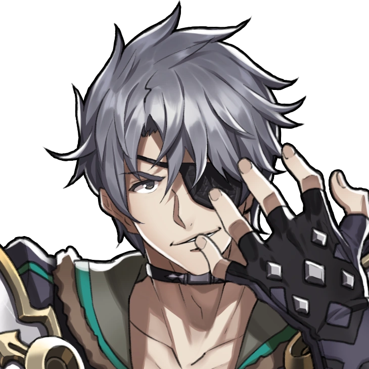

Zeke

The Crown Prince Ozychlyrus Brounev Tantal, better known as Zeke von Genbu, is a Driver. Pandoria, his Blade, is with him. Turters is the name they give to their pet turtle. Just before setting sail for Temperantia in Chapter 5, Zeke joins the group.
Quotes
"My advance cannot be stopped. Such is the destiny of those who bear the Eye of Shining Justice."
---
"Gah! My left pec aches from my old war wound."
---
"You know, it's kind of nice to travel with such a big group of friends."